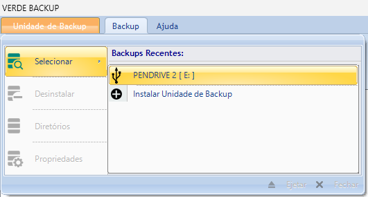

Backup e restauração
Para executar o processo de backup/restauração é necessário que a Unidade de Backup esteja instalada e que a lista de diretórios locais para backup esteja definida.
Para aprender com instalar uma Unidade de Backup, clique neste link.
Para aprender com inserir os diretórios locais para backup, clique neste link.
No backup, o programa fará uma verificação dos arquivos nos diretórios locais para backup em busca das seguintes atualizações:
Novos subdiretórios adicionados;
Novos arquivos adicionados;
Diretórios excluídos;
Arquivos excluídos;
Diretórios modificados;
Arquivos modificados.
Após o backup, a Unidade de Backup passa a ter exatamente os mesmos subdiretórios e arquivos que o drive local. Neste processo, se algum arquivo foi adicionado a algum dos subdiretórios sob controle de backup na Unidade de Backup, ele será removido. Por esta razão, é importante sempre estar atento ao arquivo Leia-me.txt na raiz da unidade para que não seja gravado arquivos nestes diretórios.
Fazendo o backup na Unidade de Backup
Para fazer o backup na Unidade de Backup, siga os seguintes passos:
1. Vá ao menu Unidade de Backup/Selecionar e clique no nome da Unidade de Backup.

2. Você terá duas opções para acessar o diálogo para manutenção de diretórios para backup: